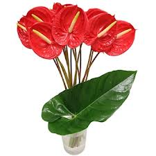

Anthurium et Arum des fleuristes

Anthurium et Arum des fleuristes (Anthurium andreanum de la famille des Aracées)
Très toxique par ingestion plus toxicité de contact.
Partie toxique pour les chats en général et le Korat en particulier :
Jeunes feuilles et sève.
Symptômes du processus pathologique :
Salivation, diarrhée, vomissements, saignements (matrice, gencives), respiration difficile, difficulté à déglutir et irritant de contact. Fort taux de mortalité.
Origine de la toxicité (principe actif) :
Oxalate de calcium.